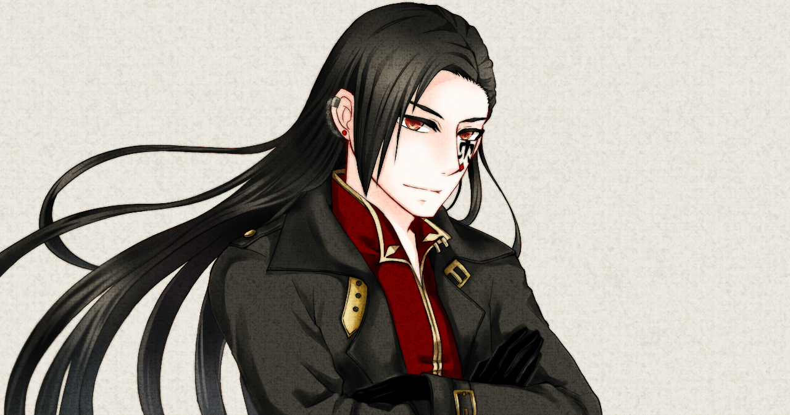
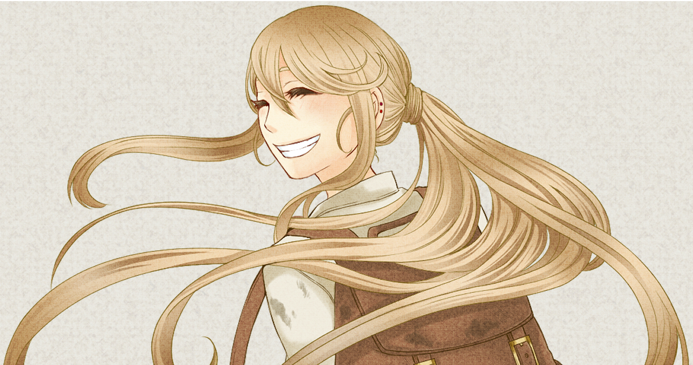
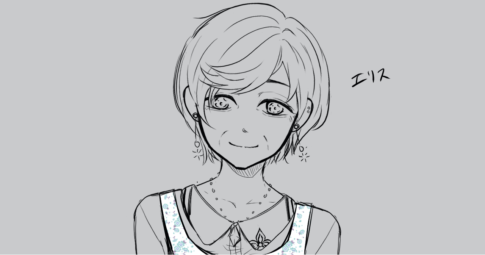
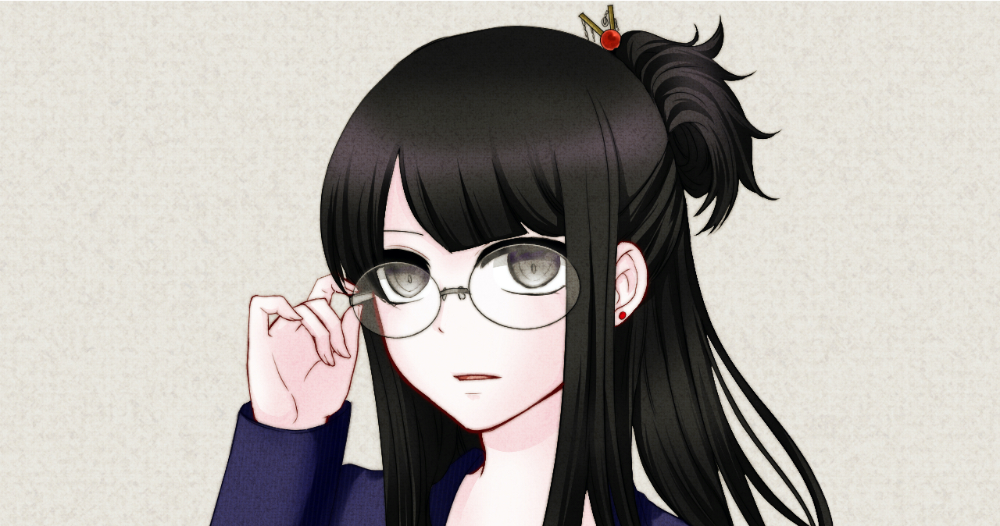
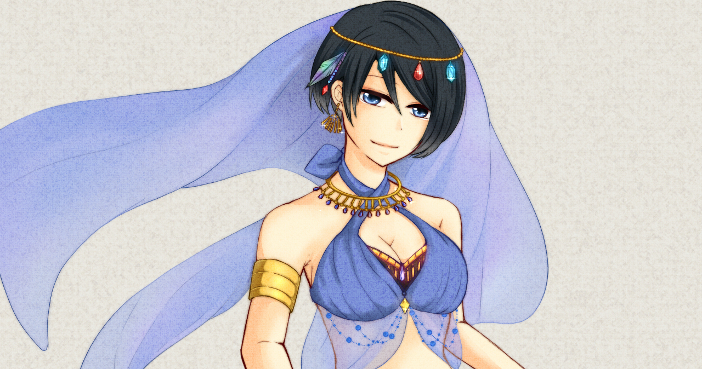
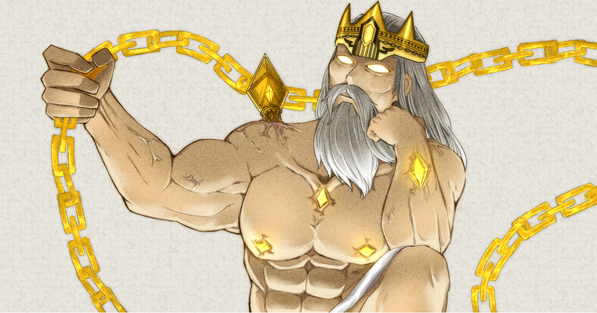
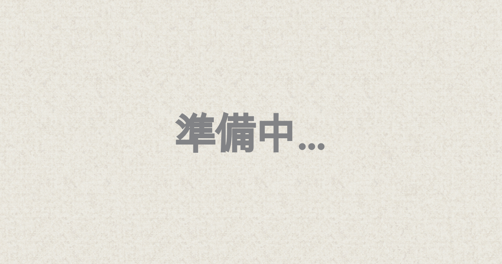

神代から生き続ける魔王。 この世界で最も強く神すら届かない力を持つ。 戦争では人間に大敗し、終戦間際に最愛の人を失う。 茫然自失となった彼は、世界をただ旅する流浪人となる。
人と魔王の間に生まれた半魔の娘。 祖母のエリスと共に、小さな街に暮らしている。 持ち前の性格で常に明るく振る舞っているが、 魔族の娘のため周囲から距離を置かれ、孤独を感じながら育ってきた。

幼い頃から冒険が大好きな探検家。 10歳を過ぎた頃から世界のあちこちを飛び回る破天荒な女性。 古代文明の遺物が大好きで、新たな遺物を求めて魔大陸にまで訪れる。 快活で臆さない、非常に活発な性格をしている。

戦時中に夫と娘を亡くした未亡人。 10年前に家に訪れた魔族の男からイーラを受け取る。 そこから一人でイーラを育ててきた。失った娘の代わりにイーラを大切に育てる。 癒えない孤独を抱えるイーラに常に穏やかに接する。
魔王軍近衛の傀儡師(パペッター)。人や物に取り憑き操る術を用いる。 終戦直前に魔王の城を抜け出し、人の街の付近で倒れていたところを、 演劇団に拾われて、現在は役者、座長を勤める。 明るく、何事にも挫けない真っ直ぐなお調子者。

魔王軍近衛の呪術師(シャーマン)。 呪術や屍術(しじゅつ)など、多岐にわたる魔術を扱える。 几帳面な女性で、魔王城の執務の一切を取り仕切る優秀な魔族。 終戦の直前に自分自身を呪い、自殺をした。

大陸を移動しながら公演を行う演劇旅団の主演女優。 真っ直ぐな心と柔軟さ、面倒見の良さを持つ美しい女性。 ちゃらんぽらんな座長のことを補佐する苦労人でもある。 劇団座長のどんな時でも常に明るく振る舞う心の強さに惹かれている。

人魔大戦で父と母を失った呪術師(シャーマン)。 戦争で逃げ延びた先で炭鉱夫に拾われ、奴隷として働いている。 城にかけられた呪いの影響を受けないため、魔王城への案内人も務めている。 引っ込み思案で臆病な男の子。

人の世界に存在し続けている金と権力の神。 常に人ともに時代を歩む。戦時より今に至る間は人間の騎士団の団長。 超常の力を使い、常にヴォルカスと対峙する仇敵。武器は持たず、己の拳と超常の力のみで戦ってきた。 世界で最も屈強な老兵。

神の私兵「神兵騎士団」筆頭騎士。 神を師と慕っている。いかなる時も迷いなく己の正義を貫く気高き騎士。 戦争では人の軍を率いて戦い、抵抗する魔族軍の鎮圧に成功する。 神から借り受けた力を振るい、その強さは人の域を大きく超える。

世界に眠る愛と慈悲の女神。 仲間を守りたい一心で戦う一人の騎士に心打たれ、神の力を授ける。 その騎士を常に見守り、時に道標を示す、人から離れた神。 愛とは何か、を常に自らに問いかけ、その答えを探す探求者。
「ただ君だけを、守りたいと願う」各章の台本は本WEBサイトにて公開しています。声劇配信用アプリからお友達同士の遊びまで、ご自由にお使いください。また、作品として一般公開をする場合のみTwitterよりお問い合わせください。
作成予定。リリース日など決まり次第、本WEBサイト更新、及び、Twitterでの告知を行います。なお、複数章に分割して販売する予定です。
作成予定。リリース日など決まり次第、本WEBサイト更新、及び、Twitterでの告知を行います。
ボイスドラマ、アプリに使用した台本をそのままご覧いただけます。１章約５０分で構成しております。兼役もありますが、どうぞご自由に楽しんでください。タップ、または、クリックしてください。
ただ君の世界を気に入ってくれた方へ、少人数でやりやすい短編などをまとめる予定です。なお、作者以外の寄稿も同様に掲載する予定です。